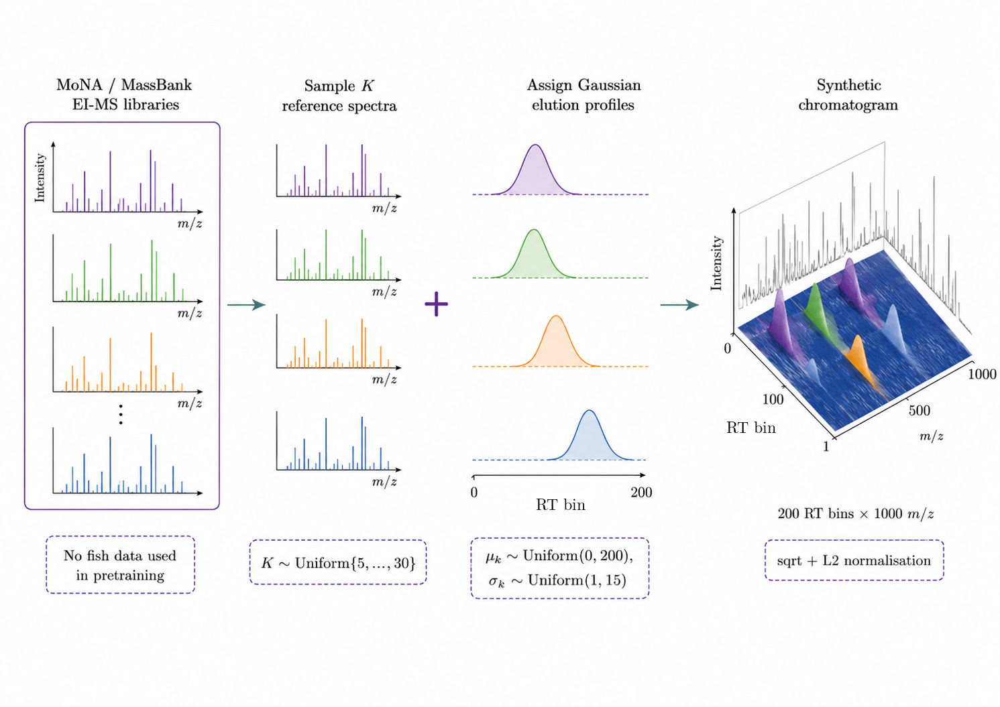

103 chromatograms, four species, six body parts
Lipids were extracted from six body parts of Snapper, Gurnard, Tarakihi and Blue Cod and run on coupled gas chromatography–mass spectrometry. Each run becomes a 200 × 1000 matrix: 200 retention-time bins from 5 to 45 minutes, each holding a mass spectrum. Every bin is square-root transformed and scaled to unit length, so the model sees the shape of each spectrum along the run.
Samples per species and body part
One chromatogram per species
Pretrain on synthetic chemistry, fine-tune on fish
Labelled GC-MS data is scarce, so ChromaDCNN first learns from chromatograms that do not exist. None of the fish data is used for pretraining, so nothing leaks into the cross-validation folds.
Synthesise
9,553 electron-ionisation spectra from MoNA and MassBank are mixed into synthetic chromatograms: 5–30 compounds per run, each eluting as a Gaussian peak of random position and width.
Pretrain
The network predicts the next RT bin's spectrum from the bins before it (next-frame prediction, 20,000 iterations), learning how co-eluting compounds and peak shapes behave.
Fine-tune & evaluate
The pretrained encoder gets a 4-way classification head and is fine-tuned on the fish data under 10 seeds × 5-fold stratified cross-validation, with a nested validation split for early stopping.
Architecture
819,717 parameters

Each RT bin's spectrum is embedded by a shared Linear(1000 → 128). Three dilated residual blocks (kernel 7, dilations 1, 2, 4; two convolutions each) grow the receptive field to 13 → 37 → 85 bins, about 17 minutes of run time. Max pooling and a learned soft-attention pooling are concatenated before the classifier.
Synthetic pretraining data

Pretrained ChromaDCNN beats every classical baseline
Fourteen methods, each scored on the same 50 held-out folds (10 seeds × 5 folds). Classical baselines (PLS-DA, random forest, RBF-SVM, MLP) are tuned by inner cross-validation on three representations of the chromatogram: the summed spectrum, the per-m/z maximum, and 50 principal components of the full 2D matrix. Every point is one fold.
Box: median and quartiles over 50 folds. Dashed line: chance (0.25). Hover a point for its value.
Full table
Mann–Whitney U against the best method, Bonferroni-corrected over 13 comparisons; |r| is rank-biserial effect size. Click a header to sort.
Synthetic pretraining adds 25 points
The same network trained from random initialisation reaches only 0.603. Because both conditions use identical seeds and folds, each fold can be compared directly.
Fold by fold
Distribution over 50 folds
From scratch is also far less stable: SD 0.176 vs 0.101.
Does the model need retention time?
We replaced every chromatogram with its summed spectrum, copied into all 200 RT bins. The model, hyperparameters and training code are unchanged, but there is no retention-time structure left to use.
ChromaDCNN from scratch, 10 seeds × 5 folds. Dotted line: PLS-DA on the summed spectrum (0.429).
balanced accuracy lost when the retention-time axis is removed (Mann–Whitney p = 1.0 × 10−7, |r| = 0.62).
Without RT, ChromaDCNN falls to the level of classical models on the summed spectrum. Its advantage comes from when compounds elute, not just which ions appear.
Where in the chromatogram is the evidence?
Gradient saliency |∂logitc/∂X| for the true class, computed only on held-out samples: one pretrained model per fold (seed 0, mean fold balanced accuracy ), averaged per species.
Retention-time profile
m/z profile
Share of RT saliency by window
40–44 min dominates for every species; Tarakihi is the most concentrated.
What these results do and don't show
- Few individuals. The 103 samples come from six fish: one each of Snapper, Gurnard and Tarakihi, and three Blue Cod. Cross-validation is stratified by species, so different body parts of the same fish fall on both sides of a split. The accuracies measure generalisation across body parts and replicates, not to new individuals.
- Approximately causal pretraining. The convolutions only look backwards in retention time, but batch-normalisation statistics are computed over the whole sequence during training, so the next-frame objective is approximately rather than strictly autoregressive.
- Saliency is one seed. The saliency maps use seed 0 only and show where the gradient is large, which is not the same as a causal attribution to specific compounds.
- Class imbalance. Blue Cod makes up 57 of 103 samples. All results are balanced accuracy, and training uses a class-weighted loss.
Run it yourself
The preprocessed fish oil data and the pretrained checkpoint are in the repository.
Every number on this page is read from results/fish_oil/ by scripts/13_build_site_data.py.
git clone https://github.com/woodRock/chroma-dcnn.git
cd chroma-dcnn
pip install -e ".[dev]"
python scripts/04_finetune_evaluate.py # ChromaDCNN
python scripts/05_run_baselines.py # PLS-DA, RF, SVM, MLP
python scripts/12_results_table.py # ranking + statistics
python scripts/09_ablation_1d_vs_2d.py # RT-collapse ablation
python scripts/11_saliency.py # saliency maps
python scripts/13_build_site_data.py # refresh this page@misc{wood2026chromadcnn,
author = {Wood, Jesse},
title = {chroma-dcnn: GC-MS Fish Species
Identification with Self-Supervised
Pretraining},
year = {2026},
url = {https://github.com/woodRock/chroma-dcnn}
}